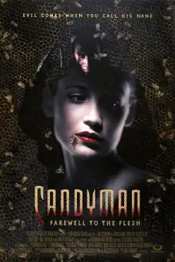

Candyman: Farewell to the Flesh
| Candyman: Farewell to the Flesh | |
|---|---|
 Theatrical release poster | |
| Directed by | Bill Condon |
| Screenplay by |
|
| Story by | Clive Barker |
| Produced by | |
| Starring | |
| Cinematography | Tobias A. Schliessler |
| Edited by | Virginia Katz |
| Music by | Philip Glass |
Production company | Lava Productions[1] |
| Distributed by | Gramercy Pictures[1] |
Release date |
|
Running time | 95 minutes[1] |
| Country | United States[2] |
| Language | English |
| Box office | $13.9 million[3] |
Candyman: Farewell to the Flesh is a 1995 American supernatural horror film directed by Bill Condon and starring Tony Todd, Kelly Rowan, William O'Leary, Bill Nunn, Matt Clark, and Veronica Cartwright. Written by Rand Ravich and Mark Kruger, it is a sequel to the 1992 film Candyman, which was an adaptation of Clive Barker's short story, "The Forbidden". Its plot follows a New Orleans schoolteacher who finds herself targeted by the Candyman, the powerful spirit of Daniel Robitaille, the murdered son of a slave who kills those who invoke him.
Unlike its predecessor, the film received negative reviews from critics. It was followed by a third film, Candyman 3: Day of the Dead, which was released in 1999, and a fourth film, titled Candyman, a direct sequel to the original 1992 film, which was released in 2021.
Plot
Three years after the Candyman murders in Chicago, Professor Phillip Purcell writes a book about the Candyman legend and hosts a lecture event in New Orleans discussing his life. He reveals Candyman's real name to be Daniel Robitaille and that he was born to enslaved Africans after the American Civil War. When Purcell is light-heartedly challenged by a member of the audience, he jokingly summons the Candyman in the mirror-like reflection of his book.
After the event, Purcell runs into Ethan Tarrant, one of the attendees. Ethan's father, Coleman, was murdered while investigating the deaths of three men in a manner similar to the Candyman legend. Ethan angrily says that Purcell caused his father's death by telling him the Candyman doesn't exist, and that the Candyman then killed him. At first polite, Purcell becomes annoyed at Ethan's behaviour. He goes to a nearby bar, but is pursued and attacked by Ethan, who is thrown out by the barman. Purcell goes to the restroom to clean blood from his face and is killed by the Candyman. The case is handled by Detective Ray Levesque and his partner, Pam Carver. They consider Ethan a suspect given his confrontation with Purcell.
Ethan's mother, Octavia, and his younger sister Annie, an art teacher, come to the station to defend him. Ethan is pressured by Levesque, who believes him to be guilty. In the meantime, Matthew Ellis, one of Annie's students, claims to have seen the Candyman. Annie tries to discredit the legend by invoking his name. Her husband, Paul, becomes one of his victims. The Candyman stalks Annie so he may kill her, and reveals that she is pregnant with Paul's daughter.
At home one morning, Annie gets a visit from a couple of her students about Matthew disappearing. Annie meets with his father, Reverend Ellis, and learns Matthew had dreams of the Candyman and sketched out the events of his death. After talking with Ethan to uncover more on their father's murder, Annie visits Honore Thibideaux, Coleman's friend, unaware that Levesque is following her as a suspect. Honore tells Annie about Daniel Robitaille and his affair with a white woman named Caroline that led to his death and earning him the name "Candyman". Caroline's father taunted the dying Daniel with Caroline's mirror, capturing a part of his soul. Caroline hid the mirror in Daniel's birthplace and granted him the ability to kill when called upon. Annie's father believed that if the mirror is destroyed, it will end the curse.
The Candyman appears and kills Honore. Levesque finds Honore's body and believes Annie killed him. Annie returns to Matthew's house and his father shows her documents of Daniel's birth and realizes he was born in the same house she was. The reverend leads Annie to a cemetery where she sees his grave with Caroline buried next to him and indicating that they had a daughter named Isabel. Going through old family pictures, Annie discovers she is a descendant of theirs and that Caroline bought Daniel's house where Annie and Ethan later grew up as children, and where Ethan discovered Coleman died as a result of him summoning the Candyman to defeat him.
At the police station, Levesque tries to get Ethan to admit that Annie did the killings and he is covering for her. Levesque is killed by the Candyman after summoning him to mock Ethan, who is shot dead when he tries to escape. Annie confronts Octavia about the Candyman, and Octavia admits that Coleman tried to link their family to the Candyman, and continues to deny him to protect her family's name; incensed by her disbelief, the Candyman kills her, and Annie flees. With the police on her trail, Annie runs into Carver, who tells her she has seen how Levesque died on camera footage. She lets Annie escape.
Annie goes to Daniel's birthplace and finds Matthew in an old shed. She falls through the stairs into the flooded basement, where she finds Caroline's mirror and the Candyman. Before he can sacrifice her, Annie destroys the mirror, annihilating him. The slave quarters crashes into the river, but Matthew saves Annie. Annie returns Matthew home where they both are blessed by Reverend Ellis at his church.
Five years later, Annie teaches her young daughter Caroline about her family history, naming her after Daniel's lover. After Annie kisses her goodnight and leaves the room, Caroline starts to chant the Candyman's name. Annie stops her and tells her to go to bed.
Cast
- Tony Todd as Candyman / Daniel Robitaille
- Kelly Rowan as Annie Tarrant
- Bill Nunn as Reverend Ellis
- William O'Leary as Ethan Tarrant
- Veronica Cartwright as Octavia Tarrant
- Matt Clark as Honore Thibideaux
- Randy Oglesby as Heyward Sullivan
- Glen Gomez as the Kingfish
- Russell Buchanan as the voice of the Kingfish
- Joshua Gibran Mayweather as Matthew Ellis
- David Gianopoulos as Detective Ray Levesque
- Timothy Carhart as Paul McKeever
- Michael Bergeron as Coleman Tarrant
- Fay Hauser as Pam Carver
- Caroline Barclay as Caroline Sullivan
- Brianna Blanchard as Young Caroline McKeever
- Clotiel Bordeltier as Liz
- Michael Culkin as Phillip Purcell
- George Lemore as Drew
- Ralph Joseph as Mr. Jeffries
- Margaret Howell as Clara
Production
Development
According to Virginia Madsen, Bernard Rose, the director of the 1992 Candyman film originally had another concept in mind for the sequel:
- "They originally wanted us to do Candyman 2, but they didn't like Bernie's idea for the sequel. They made the Candyman into a slave which was terrible because the Candyman was educated and raised as a free man. Bernie wanted to make him like an African American Dracula which I think it was so appealing to the African American community because they finally had their own Dracula. The Candyman was a poet and smart. He wasn't really a monster. He was sort of that classical figure."
- "The sequel that Bernie wanted to make was a prequel where you see the Candyman and Helen fall in love. It was turned down because the studio didn't want to do an interracial love story."[4]
In 2020, Bloody Disgusting reported that there was another unmade follow-up, titled Candyman II: The Midnight Meat Train. Rose was meant to be the director once again, and it was supposed to be about "a mythical figure" haunting the early 1990s London. The sequel would have been "somewhat based" on Clive Barker's Books of Blood short story, taking place in the subway.[5] Rose further elaborated:
- "The idea was that the Jack the Ripper murders start to happen. And whereas the first Candyman was about race, the idea was to make the second Candyman about gender. It was to be about the idea of this faceless, brutal killer who only attacked women, in a horrific sexual manner. And whose primary objective was to stop 'whores' — his weird, moralistic take to it. (...) The Ripper is *like* a Candyman."[5]
The Midnight Meat Train-inspired follow-up went unproduced because the studio found its screenplay too risky.[5] The only scene from Rose's draft of the movie left in the actual sequel — Candyman: Farewell to the Flesh — is the one featuring Professor Phillip Purcell (Michael Culkin), the surviving character from the first film.[5][6] Actress Tuesday Knight was reported to have declined a role in Farewell to the Flesh, and later claimed that it was the only horror film that she regrets turning down.[7]
Filming
Filming took place on location in New Orleans, Louisiana and Los Angeles, California. Principal photography began on August 16, 1994, and filming wrapped on October 19 of the same year.[8]
Release
Candyman: Farewell to the Flesh was originally slated for theatrical release by PolyGram Filmed Entertainment on February 17, 1995,[9] but it was pushed back one month, premiering in the United States on March 17, 1995.[1]
Home media
MGM Home Entertainment released Candyman: Farewell to the Flesh on DVD on August 28, 2001.[10] Scream Factory released the film on Blu-ray on January 6, 2015, featuring an audio commentary with director Condon among other bonus materials.[11]
A compilation of music from the film and from the original Candyman was released in 2001 as the inaugural release of Philip Glass's Orange Mountain Music record label, under the title The Music of Candyman.[12]
Reception
Box office
During its opening weekend, the film ranked number 2 and the U.S. box office, earning $6,046,825 in 1,605 theaters.[3] It earned an additional $2,776,215 the following weekend, followed by $1,390,817 the weekend of March 31, 1995.[3] The film concludes its theatrical run with a domestic gross of $13,940,383.[3]
Critical response
As of January 2025, the film holds a 21% approval rating on internet review aggregator Rotten Tomatoes based on 33 reviews with an average score of 4.3/10. The critics consensus reads, "Doubling down on gore while largely abandoning the subtext and wit that made the original worthwhile, Candyman: Farewell to the Flesh disappoints."[13]
Leonard Klady of Variety called it "a case of diminishing artistic returns but not, thankfully, a victim of the terrible twos".[14] Caryn James of The New York Times called it a "sluggish, predictable, low-rent sequel".[15] Kevin Thomas wrote that the film "overflows with blood and guts, drowning a potent metaphor for African American rage and oppression".[16] Owen Gleiberman of Entertainment Weekly rated it D and wrote, "This cloddish sequel undermines its revenge-of-the-repressed premise with racist scare tactics".[17] The Chicago Tribune's Michael Wilmington compared the film negatively against its predecessor, adding that "Director Bill Condon can barely keep his camera still; perhaps he's trying to escape. The script is the usual farrago about an invincible monster slaughtering everyone while pursuing the heroine with what seems unusual patience and discretion."[18]
Roger Ebert of the Chicago Sun-Times gave the film two out of five stars, and felt that it failed to further develop the mythology of the Candyman character in a concise manner, concluding: "I am left with questions. Why did the Candyman visit Chicago? Why did he prey on innocent young black victims who had done him no harm? Which is he, a mythical force brought to reality by psychic mind power, or an immortal being fueled by the life force of the bees, who lives in mirrors? I spend my days pondering questions such as these, so you won’t have to."[19]
The Austin Chronicle's Marc Savlov noted that the film "elicits considerable chills", and Tony Todd is "effective as the phantasmic Candyman". He also praised Philip Glass's "wonderfully resonant score", and called Farewell to the Flesh a "sequel that actually outperforms the original".[20] Writing for The Washington Post, Richard Harrington hailed the film a "compulsive chiller", and praised Todd's acting abilities.[21]
In a retrospective assessment for the magazine Little White Lies, Sam Thompson praised the film as an underrated sequel, noting that it "elicits a similar state of woozy imbalance as the original because both possess the same strange, irreducible qualities: a dream logic of mirror portals and bee-infested torsos, history wrenching itself into the present, generic oscillations between ghost story and slasher, and an insistence on asking difficult questions about American racism."[22]
References
- ^ a b c d "Candyman: Farewell to the Flesh (1995)". AFI Catalog of Feature Films. American Film Institute. Retrieved January 19, 2018.
- ^ "Candyman Farewell to the Flesh (1995)". British Film Institute. Archived from the original on May 5, 2019. Retrieved January 19, 2018.
- ^ a b c d "Candyman: Farewell to the Flesh". Box Office Mojo. Retrieved January 5, 2025.
- ^ Caprilozzi, Christine (December 14, 2012). "Twenty Year Retrospective of Candyman with Virginia Madsen". Horror News Network. Archived from the original on January 5, 2025.
- ^ a b c d Jenkins, Jason (March 3, 2020). "'Candyman' Director Bernard Rose Details His Unmade Sequel in More Depth Than Ever Before (Exclusive)". Bloody Disgusting. Archived from the original on January 5, 2025.
- ^ Holtz, Mike (January 3, 2025). "Candyman: Farewell to the Flesh (1995) – What Happened to This Horror Movie?". JoBlo.com. Archived from the original on January 5, 2025.
- ^ Collum 2004, p. 100.
- ^ "Candyman: Farewell to the Flesh (1995) – Reviews and overview". Movies and Mania. March 23, 2019. Archived from the original on August 13, 2021. Retrieved August 13, 2021.
- ^ Vancheri, Barbara (January 13, 1995). "OK Hollywood, whadda ya got?". Pittsburgh Post-Gazette. p. 17 – via Newspapers.com.
- ^ "Candyman - Farewell to the Flesh". Amazon. August 28, 2001. Archived from the original on April 22, 2020.
- ^ Jane, Ian (December 22, 2014). "Candyman: Farewell To The Flesh (Blu-ray)". DVD Talk. Archived from the original on April 22, 2020.
- ^ "Candyman, The Music of – Philip Glass". PhilipGlass.com. 2019. Retrieved October 24, 2023.
- ^ "Candyman: Farewell to the Flesh (1995)". Rotten Tomatoes. Retrieved January 5, 2025.
- ^ Klady, Leonard (March 16, 1995). "Review: 'Candyman: Farewell to the Flesh'". Variety. Retrieved June 16, 2015.
- ^ James, Caryn (March 18, 1995). "Candyman Farewell to the Flesh (1995)". The New York Times. Archived from the original on January 5, 2025.
- ^ Thomas, Kevin (March 20, 1995). "MOVIE REVIEW : This Time the 'Candyman' Turns Up in New Orleans". Los Angeles Times. Archived from the original on March 7, 2016.
- ^ Gleiberman, Owen (April 7, 1995). "Candyman: Farewell to the Flesh". Entertainment Weekly. Retrieved June 16, 2015.
- ^ Wilmington, Michael. "'Farewell to the Flesh' a sour viewing experience". Chicago Tribune. p. 284 – via Newspapers.com.
- ^ Ebert, Roger (March 17, 1995). "Candyman: Farewell to the Flesh". Chicago Sun-Times. Archived from the original on January 5, 2025 – via RogerEbert.com.
- ^ Savlov, Marc (March 24, 1995). "Candyman: Farewell to the Flesh". The Austin Chronicle. Archived from the original on January 13, 2006. Retrieved August 12, 2021.
- ^ Harrington, Richard (March 17, 1995). "'Candyman: Farewell to the Flesh'". The Washington Post. Archived from the original on September 25, 2020.
- ^ Thompson, Sam (March 15, 2020). "In defence of Candyman 2". Little White Lies. ISSN 2516-0559. Archived from the original on January 5, 2025.
Sources
- Collum, Jason Paul (2004). Assault of the Killer B's: Interviews with 20 Cult Film Actresses. Jefferson, North Carolina: McFarland. ISBN 978-0-786-41818-3.
External links
| |
| Films |
|
| Other | |
| |
| Compositions | |
|---|---|
| Operas |
|
| Symphonies | |
| Concertos | |
| Film scores |
|
| Related articles | |